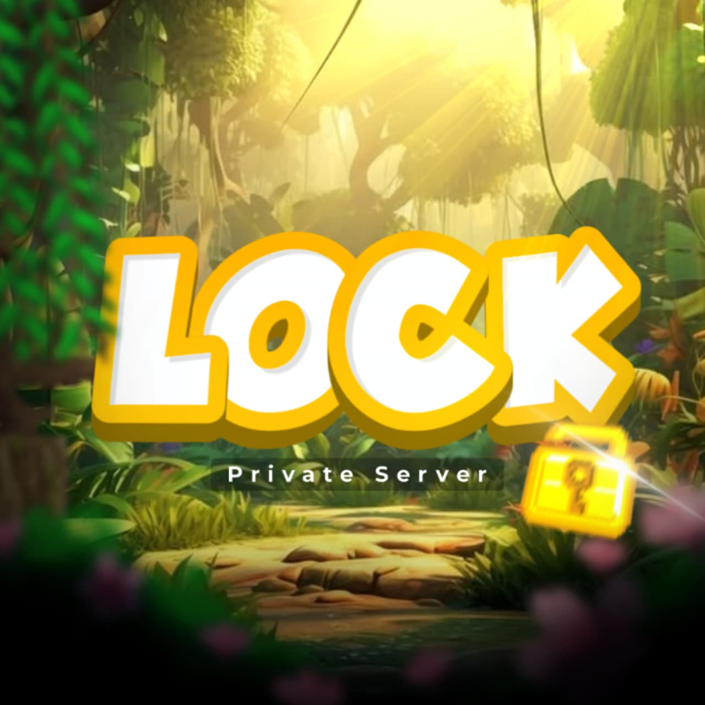

Lock PS

How to Play
Android
Opsi 1: Lock PS APK Recommended
Lock PS APK adalah Growtopia clone yang langsung connect ke Lock PS. Tidak perlu PowerTunnel atau Virtual Host.
- Download Lock PS APK Download Lock PS APK
- Install APKBuka file APK lalu install. Jika diminta, izinkan install dari sumber ini.
- PlayBuka Lock PS APK lalu klik Play. Selesai!
Opsi 2: Growtopia Asli + PowerTunnel
Hanya jika kamu ingin main pakai APK Growtopia asli. Butuh PowerTunnel / Virtual Host.
- Install Growtopia (Support GTPS) Download GT V5.58 Support GTPS
- Install PowerTunnelDownload APK lalu install.
Download Power Tunnel APK - Configure Host SettingsBuka PowerTunnel → ☰ → Host Settings → Host list URL.
- Paste URLCopy URL ini lalu paste ke PowerTunnel:
https://www.lockps.online/host/android.txt - StartSet Update period ke On start, lalu tekan Start.
Kalau URL gagal, pakai file Virtual Host:
Download Virtual Host File - Launch GrowtopiaBuka Growtopia lalu klik Play.
iOS
Growtopia v5.59+ butuh certificate GTPS Cloud. Install hanya dari link resmi di bawah.
- Download CertificateBuka link ini di Safari. iOS akan bilang profile sudah di-download.
https://www.lockps.online/host/lockps-root-ca.crt - Install ProfileSettings → General → VPN & Device Management → pilih profile GTPS Cloud → Install.
- Enable Full TrustSettings → General → About → Certificate Trust Settings → aktifkan GTPS Root CA.
- Install Surge 5Download dan install Surge 5 dari App Store.
- Import ProfileBuka Default.conf → IMPORT → Download Profile from URL.
- Paste URL & SetupPaste URL ini ke Surge, tap SETUP, lalu allow VPN profile.
https://www.lockps.online/host/ios.conf - Launch GrowtopiaBuka Growtopia lalu klik Play.
Windows
- Install Growtopia (Support GTPS) Download GT V5.57 Support GTPS (Windows)
- Download Certificate Download Lock PS Root CA
- Install CertificateDouble-click file → Install Certificate → pilih Local Machine.
- Choose Trusted Root StorePilih "Place all certificates in the following store" → Trusted Root Certification Authorities.
- Run Notepad as Administrator
- Open hosts fileFile → Open, lalu buka:
C:\Windows\System32\drivers\etc\hosts - Add entriesPaste di paling bawah, lalu Save (Ctrl + S).
- Launch GrowtopiaBuka Growtopia lalu klik Play.
macOS
- Download Certificate Download Lock PS Root CA
- Add to KeychainBuka certificate dengan Keychain Access, tambahkan ke keychain System.
- Enable TrustDouble-click certificate → Trust → "When using this certificate" → Always Trust.
- Open TerminalBuka Terminal lewat Spotlight.
- Edit hosts fileJalankan:
sudo nano /etc/hosts - Add entriesPaste di paling bawah, lalu save dengan Ctrl+X, Y, Enter.
- Launch GrowtopiaBuka Growtopia lalu klik Play.